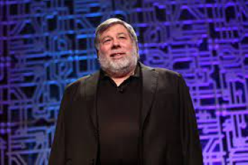
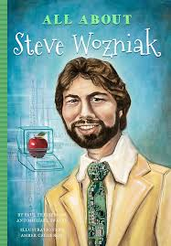

|

|
Steve Wozniak
|
Stephen Gary Wozniak, mais conhecido como Steve Wozniak, nasceu no dia 11 de agosto de 1950, em São José, na Califórnia, e é co-fundador da Apple Computer, junto com Steve Jobs. O engenheiro de computação conheceu Jobs em Palo Alto, após deixar a Universidade da Califórnia, em 1975. Steve Wozniak sempre gostou de eletrônicos e, quando era jovem, uma de suas primeiras criações foi o Blue Box, um aparelho capaz de burlar o sistema telefônico e ligar de graça para qualquer lugar do mundo. Juntamente com o Steve Jobs, venderam alguns dos aparelhos e arrecadaram cerca de 6 mil dólares. Woz projetou o hardware, os circuitos integrados e o sistema operacional do Apple I, bem antes de ser batizado com esse nome e comercializado por ele e Jobs. Os dois fundaram a Apple Computer, em 1 de abril de 1976, e venderam o aparelho por menos de 700 dólares. Woz tornou-se vice-presidente da empresa, realizou melhorias e introduziu um monitor de alta resolução gráfica no Apple II, fazendo com que o computador fosse capaz de mostrar figuras, além das letras. Após deixar a Apple, em 1985 (apesar de continuar até hoje registrado como funcionário e receber um salário simbólico da empresa), Woz criou o primeiro controle remoto universal e seguiu carreira como professor de tecnologia para crianças. Em 2017, ele fundou a Woz U, uma plataforma educacional focada em engenharia de software e desenvolvimento tecnológico. |  |
Carreira
1985:
deixa a Apple, embora permaneça envolvido com a empresa como funcionário e continue a receber um salário simbólico.
1986:
Ele funda a empresa de desenvolvimento de produtos CL 9, que cria o primeiro controle remoto universal programável, o CL 9 Core.
1987:
Wozniak publica sua autobiografia, "iWoz: From Computer Geek to Cult Icon: How I Invented the Personal Computer, Co-Founded Apple, and Had Fun Doing It", que conta sua história desde os primórdios até a fundação da Apple.
1989:
Wozniak recebe o título honorário de Doutor em Engenharia da Universidade de Colorado em Boulder.
1990:
Ele co-funda a Wheels of Zeus (WoZ), uma empresa de tecnologia sem fio focada em dispositivos de rastreamento e localização.
2002:
Wozniak torna-se professor adjunto na Universidade de Tecnologia de Sydney, na Austrália.
2006:
Wozniak aparece como um competidor no reality show "Dancing with the Stars".
2006:
Ele funda a Acquicor Technology, uma empresa de investimentos focada em aquisições no setor de tecnologia.
2009:
Wozniak é incluído no National Inventors Hall of Fame, em reconhecimento às suas contribuições para a indústria de tecnologia.
2014:
Ele se casa com Janet Hill, uma artista e educadora.
Além desses eventos, Wozniak também continuou a ser um palestrante requisitado em eventos de tecnologia, além de envolver-se em várias atividades filantrópicas e educacionais.
Outro fato curioso sobre Steve Wozniak é que ele tinha uma preferência natural por testar os dispositivos da Apple mesmo depois de sua saída da empresa, sempre demonstrando um profundo interesse e curiosidade pelos produtos que ele ajudou a criar, e permanecendo como um grande entusiasta da tecnologia da Apple ao longo dos anos e apesar de não estar mais envolvido diretamente no desenvolvimento ou na gestão da empresa, Wozniak frequentemente demonstrava grande ânsia em experimentar novos produtos da Apple e acompanhava de perto as inovações da empresa que ele co-fundou.
Sua conexão emocional e técnica com a Apple sempre foi evidente, refletindo sua paixão contínua pela tecnologia e pelo impacto que ela pode ter na vida das pessoas e dessa maneira ele permanece um ícone da indústria de tecnologia e um defensor do desenvolvimento criativo e inovador.
|  |
Com 10 títulos de doutorado honorários em engenharia, além do status de “estrela pop”, o introvertido geek passou a ser chamado para uma série de participações em programas de televisão como a série The Big Bang Theory, o talk show de Jimmy Fallon e até mesmo a versão americana da Dança dos Famosos. Wozniak é conhecido por sua generosidade e envolvimento em várias causas filantrópicas. Ele doou significativamente para instituições de caridade ao longo dos anos e tem sido um defensor ativo da educação e do acesso à tecnologia para todos. Durante seus dias na Apple, Wozniak era conhecido por suas brincadeiras e engenhocas divertidas. Ele criou diversos dispositivos e programas que tinham como objetivo divertir seus colegas de trabalho. |
©Site criado e desenvolvido pelo Grupo 7. Todos os direitos reservados™